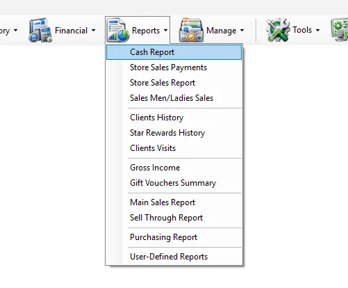
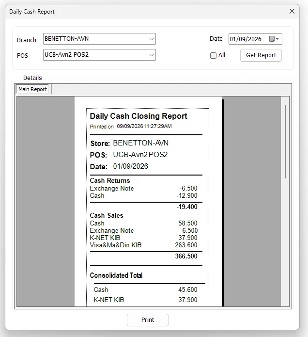
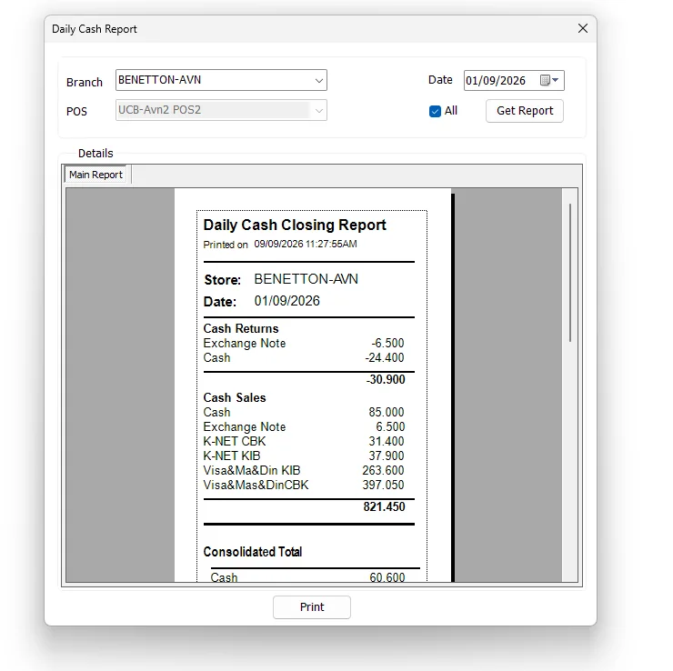
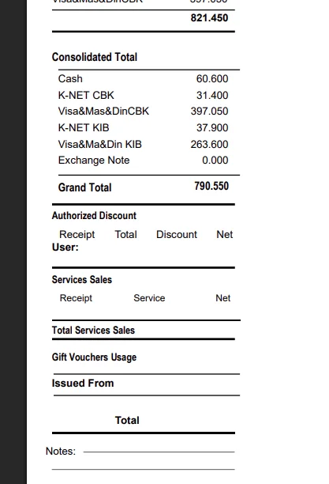

Daily Cash Report
The Daily Cash Report is the store closing report for a single business date. It can show one POS terminal or consolidate all POS terminals in the selected branch, then present cash sales, cash returns, tender totals and other closing information in a printable report.

Run the Daily Cash Report
- Select the required Branch.
- Select the required POS, or enable All to consolidate the whole branch.
- Select the required Date.
- Click Get Report.
- Review the report preview.
- Click Print when a printed closing report is required.
Branch and POS selection
| Option | What it does |
|---|---|
| Branch | Selects the store whose cash closing will be reported. The list follows the stores available to the logged-in user. |
| POS | Selects one configured POS terminal inside the selected branch. |
| All | Consolidates all POS terminals for the selected branch. It does not mean all branches. |
| Date | Selects the business date used by the closing report. |
When a branch is selected, IMS reloads that branch's configured POS terminals. If the current workstation IP matches one configured POS, IMS automatically selects it. Otherwise, IMS selects the last POS in the branch's configured list.
If the branch has only one configured POS, IMS automatically enables All and disables the POS selector because the branch-wide result and the single-POS result represent the same terminal.
Single POS report
With All cleared, IMS generates the POS-specific version of the Daily Cash Closing Report. The report header identifies the selected Store, POS and Date.

All POS report
Enable All when the closing report should represent the complete branch rather than one terminal. IMS switches to the branch-wide cash report and disables the POS selector.

What the closing report contains
The exact payment lines depend on the selected date and the payment methods used by the store. The supplied IMS closing format includes the following sections:
| Section | Purpose |
|---|---|
| Cash Returns | Shows return/refund values by payment or tender method, followed by a return subtotal. |
| Cash Sales | Shows sales values by payment or tender method, followed by a sales subtotal. |
| Consolidated Total | Shows the consolidated balance by payment/tender method after the report's sales and return activity is combined. |
| Grand Total | Displays the final consolidated total shown by the Daily Cash Closing Report. |
| Authorized Discount | Provides columns for Receipt, Total, Discount, Net and User when authorized-discount activity exists. |
| Services Sales | Provides Receipt, Service and Net details, followed by Total Services Sales. |
| Gift Vouchers Usage | Shows gift-voucher usage information when present. |
| Issued From | Report section available for issue/source information where applicable. |
| Notes | Provides the printed report's notes area. |

Preview and printing
Get Report generates a read-only Crystal Reports preview inside the Daily Cash Report window. The embedded preview deliberately hides the standard Crystal toolbar; printing is handled through the IMS Print button.
The Print button works after a report has been generated. IMS sends the report to the printer configured for this report type and uses the configured number of copies.
Access and permissions
The Cash Report menu is permission controlled. If the command is missing under Reports, the logged-in user does not have the Daily Cash Report access policy and should contact the IMS administrator if access is required.
Unlike the grid-based sales reports, this screen does not provide Export to Excel, Send by Email or Save As commands. Its normal output is the on-screen closing preview and printed report.
Common questions
What does All mean?
It means all POS terminals in the selected branch. It does not run the report for all branches.
Why did IMS automatically select a POS?
When possible, IMS matches the current workstation's IP address to the POS configuration for the selected branch. If there is no match, it selects a configured POS from the branch list.
Why is the POS selector disabled?
The All option is selected, or the branch has only one configured POS. Clear All when it is available and you need a specific POS report.
Why is Print doing nothing?
Generate the report first with Get Report. IMS only prints when a report object is currently loaded.
Why is Cash Report missing from the Reports menu?
The menu is controlled by the logged-in user's Daily Cash Report permission.
Branch and POS master data
The Branch and POS choices come from Manage → Stores. Each POS is maintained under its Store master with its own POS ID, name and IP address.
Services Sales
The Daily Cash Closing Report can include a dedicated Services Sales section for Service Items maintained in Manage → Service Items.